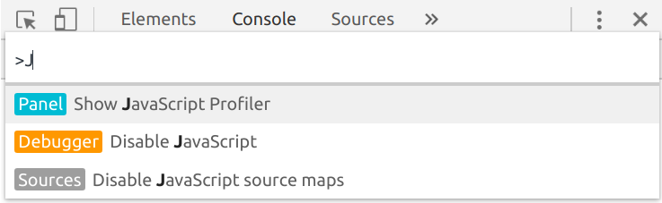

Master the Browser's WebDevelopers Tools and be productive
Created for
Created by

Console APIs
Console APIs
console.table
- Logs an array of objects as a table.
- console.table(array)
console.group
- Allows us to group the log messages
- console.table(array)
console.count
- Writes the number of times that count() has been invoked at the same line and with the same label.
- Reference: console.count
console.profile
- On later Chrome Dev Tools (Chrom 70) profiles can be used only in the JavaScript Profiler pages
- The easy way to find it is with the Command Pallet:
- Open the Dev Tools and press CTRL+SHIFT+P 
{kind=link}
console.profile
- Reference:
- console.profile
- console.profileEnd
console.time
Analyzing Runtime Performance
Analyzing Runtime Performance
- Reference: Performance Analysis Reference @ChromeDevTools
- LiveDemo
- Download the demo file: jq_vs_es_profiling_demo.html
Task
- The template code and the task itself are in the file:
- event_delegation_task
Debugging JavaScript
Debugging JavaScript
Practicals
Task
- FInd the problem in the code:
- to_debug.html
These slides are based on
customised version of
framework